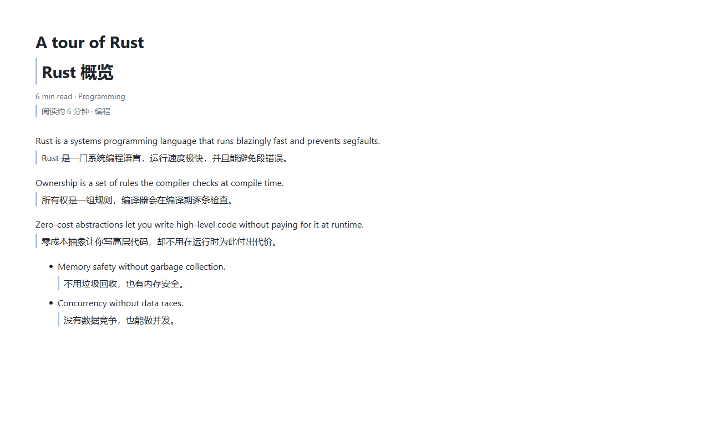
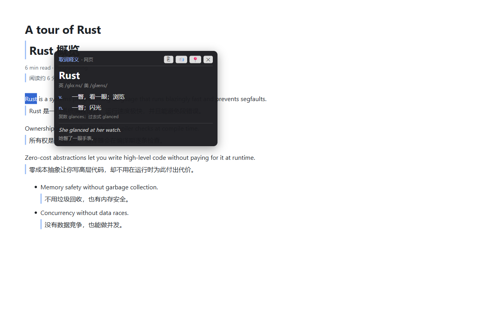
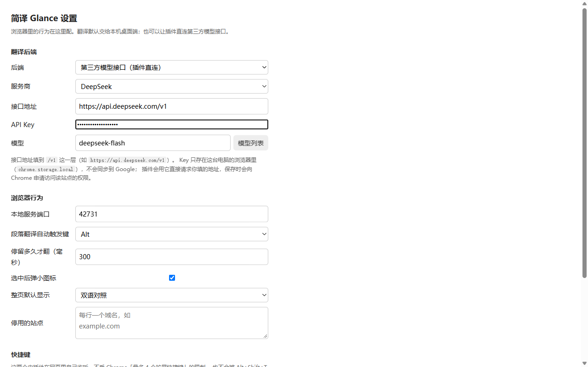

桌面端 + Chrome 插件，翻译交给大模型。目标语言固定简体中文，中文段落自动跳过。



| 本机桌面端 | 直连模型接口 | |
|---|---|---|
| 谁请求模型 | 桌面端服务（只监听 127.0.0.1） | 插件自己请求 |
| API Key 放哪 | 桌面端配置文件，不进浏览器 | 浏览器扩展的本地存储，不参与账号同步 |
| 离线词库 | 有，查单词先秒出本地释义 | 没有 |
| 适合 | 自己的电脑、机密页面 | 只想装插件、多设备用 |
直连模式支持任何 OpenAI 兼容的服务：DeepSeek、OpenAI、通义千问、智谱、Kimi、硅基流动……
简译Glance-setup-<版本>.exe（约 684 MB，含实时字幕组件与两个语音识别模型）。glance-extension-<版本>.zip 解压后在 chrome://extensions 里「加载已解压的扩展程序」。商店版与解压版是两个不同的扩展，ID 不一样，商店版会申请本机服务（127.0.0.1）的访问权限。
生效日期：2026-11-05 适用版本：1.2.3 及以后
开发者不收集任何数据。扩展与桌面端里没有统计、广告、后台或用户账号，也没有向开发者服务器发送的任何一条信息。处理的数据只有两类：
无论走哪条路，开发者都拿不到这些内容。
| 内容 | 存储位置 | 是否随账号同步 |
|---|---|---|
| API Key | 浏览器扩展的本地存储（chrome.storage.local） | 否，不会同步到 Google |
| 接口地址、模型名、快捷键等设置 | 浏览器扩展的同步存储（chrome.storage.sync） | 是，仅为方便你在多台设备上用同一套设置 |
| 翻译历史 | 不保存。扩展没有翻译历史功能 | — |
清空 API Key：在扩展设置页把 API Key 框清空并保存即可。卸载扩展会删除上述全部本地数据。
| 权限 | 用途 |
|---|---|
| storage | 保存上述设置与 API Key |
| activeTab | 你点扩展图标时识别当前标签页 |
| scripting | 扩展更新后给已打开的标签页重新注入脚本 |
| http://127.0.0.1/* | 连接你自己电脑上的桌面端服务 |
| 站点访问权限 | 只在你填写了模型接口地址后，才会就该地址单独向你申请，由你在 Chrome 弹窗里逐次决定 |
插件打包了 KaTeX（LaTeX 公式渲染，MIT 许可），完全本地运行，不联网加载任何代码。
政策如有变更，会随新版本发布，并更新本文件顶部的生效日期与版本号。
反馈时带上这三样，定位会快很多：出问题页面的网址、扩展的版本号（chrome://extensions 里能看到）、以及「关于」页里的排障信息复制内容。
| 动作 | 快捷键 |
|---|---|
| 整页翻译 | Alt+Shift+Y |
| 划词翻译 | Alt+Shift+S |
| 段落翻译 | 按住 Ctrl（可改成 Alt 或 Shift）停在段落上 |